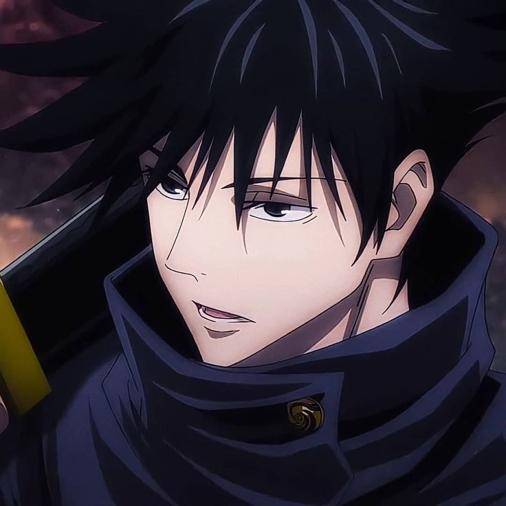

Yuji Itadori

Megumi Fushiguro

Nobara Kugisaki

Satoru Gojo
Jujutsu Kaisen

Jujutsu Kaisen is the story of Yuji Itadori, an easygoing high school student who joins the occult club at school. When they accidentally summon grotesque creatures by messing with a cursed object, Itadori fights to save his friends’ lives. A sorcerer, drawn to the school by the dangerous object, reveals that it grants powerful cursed energy when swallowed. Desperate to save everyone, Itadori swallows the talisman—a decomposed finger. As a result, he’s possessed by Sukuna, the king of curses, and his life changes forever.
Curses are monstrosities formed by an overwhelming amount of negative emotions, like shame or regret. The curses are drawn to places where those feelings are strongest. Unsuspecting humans are frequently attacked and killed by these horrors, and it’s up to brave and powerful sorcerers to destroy them before they cause more harm.
Sukuna’s 20 fingers are scattered around the world. If Itadori can track down and ingest every finger, he’ll absorb even more of the curse into his body. If Itadori is then killed, the curse will be completely destroyed along with him. The young student accepts the mission to put an end to Sukuna once and for all. He enrolls in Jujutsu Tech High School to learn sorcery techniques to aid in the search for the remaining fingers.
Yuji Itadori
Megumi Fushiguro
Nobara Kugisaki
Satoru Gojo